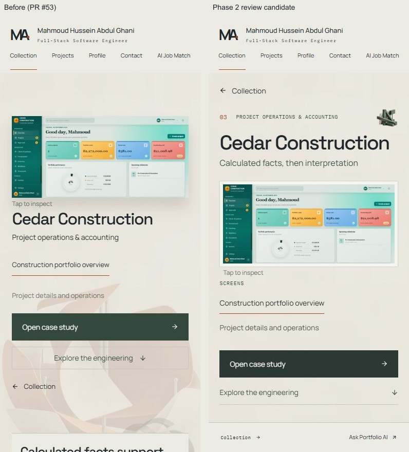
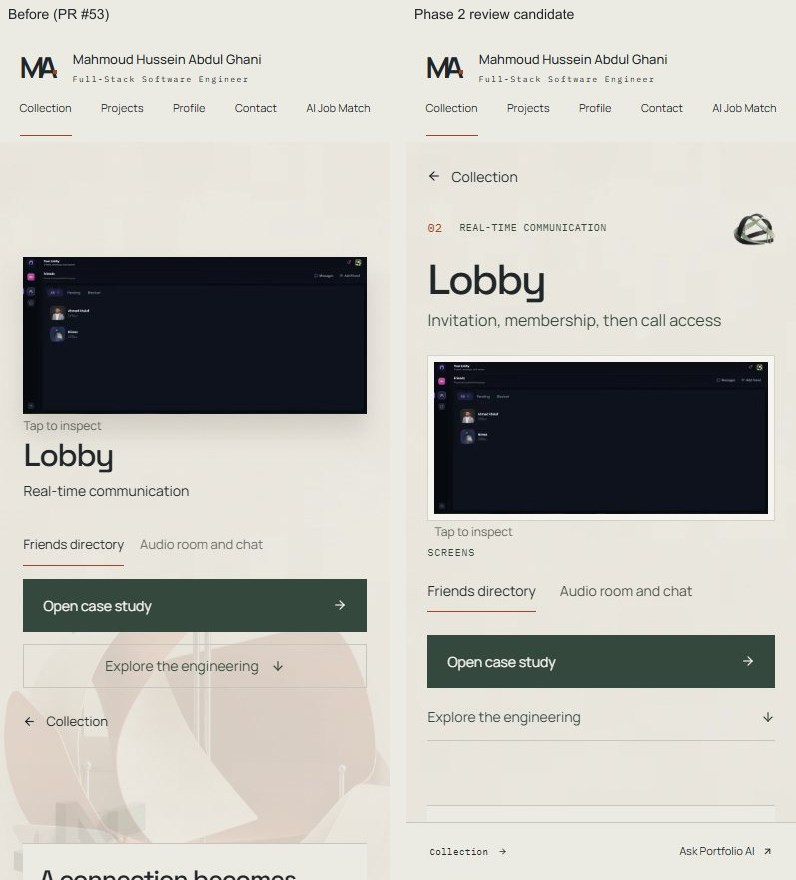

Phase 2 review candidates above PR #53. The normal Cedar/Lobby presentation stays unchanged. JobPilot retains its approved design.
Extract the ZIP and open this index for matched views at 320×844, 390×844, 430×844, 768×1024, 1280×720 and 1440×900. Each project includes phone/desktop native recordings, reader/demonstration comparisons, opening samples, reduced motion and forced photographic fallback.
Windows Chrome viewport emulation is distinct from actual local Intel UHD / ANGLE WebGL. No physical-device or GPU-smoothness claim. Interactive candidates require the compiled review Preview; Vercel authentication remains in place. Noindex is not access protection.

